安心感が伝わる
お店の想いや雰囲気を写真と言葉で伝え、信頼感を高められます。
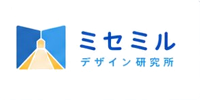
無料相談徳島のWebサイト制作・作成代行
ミセミルは、徳島の学生が地域のお店に寄り添い、 ホームページ制作・公式LINE・チラシ・Web運用まで支援するWeb制作サービスです。 初めてでも相談しやすい進行で、お店の魅力を見える形に整えます。
お店の強みを見える形に変え、予約・相談・問い合わせにつながる導線づくりをサポートします。
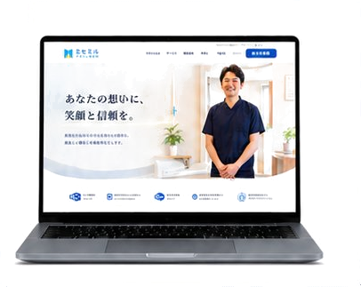

お店の想いや雰囲気を写真と言葉で伝え、信頼感を高められます。

検索や地図、紹介から見つけてもらえる接点が増えます。
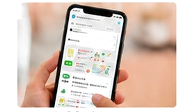
分かりやすい導線で、予約・問い合わせのハードルを下げます。
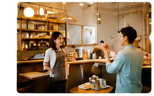
サービスや強みを整理し、伝える順番とデザインにまとめます。
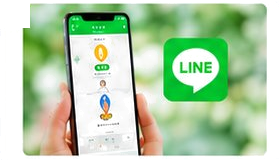
LINEやチラシと連携し、情報発信やリピート施策を強化できます。
徳島の学生がAIを活用しながら、ひとつひとつ丁寧に手作業で制作するWeb制作サービスです。 学生の柔軟な発想と、地域への想いを活かし、個人事業主・小規模事業者の魅力をカタチにします。
Members
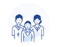
Student Director
お店の想いや課題を聞き取り、ページ構成・文章・導線を一緒に整理します。
AI Support
リサーチ、文章整理、制作効率化にAIを活用し、低価格でも品質を保ちます。
Local Partner
徳島のお店に寄り添い、公開後の使い方や集客導線まで相談しやすく支えます。
ヒアリングから公開まで、必要な範囲を絞ってスピーディーに進めます。
学生の実践経験とAIの効率化で、一般的なWeb制作会社より始めやすい価格を目指します。
約6分の1の価格帯から固定概念にとらわれず、地域のお店の新しい切り口を伝えます。
お店の雰囲気や地域性を理解し、顔の見える距離感で進めます。
専門用語を避け、分かりやすく相談できる進行を大切にします。
サービス内容、料金、写真、営業時間、アクセス、問い合わせ方法など、Webサイトに必要な情報を一緒に洗い出します。
お店の魅力や強みをヒアリングし、初めて見るお客様にも伝わりやすい言葉へ整えます。
公式LINE、SNS、Googleマップ、チラシからWebサイトへつなげる使い方まで考えます。
メニュー、店内写真、営業時間、アクセス、予約導線を整理し、来店前の不安を減らすWebサイトを制作します。
施術メニュー、スタッフ、雰囲気、予約方法を分かりやすく伝え、SNSやLINEからの流入も受け止めます。
症状別の説明、料金、初回の流れ、よくある質問を掲載し、安心して問い合わせできる構成にします。
サービス内容や強みを整理し、名刺代わりではなく問い合わせにつながるホームページ作成を支援します。
徳島市、鳴門市、小松島市、阿南市、吉野川市、阿波市、美馬市、三好市、板野郡、名西郡など、 徳島県内の店舗・事業者のホームページ制作やWebサイト作成代行を想定しています。 オンライン相談にも対応できるため、まずは現在のお悩みや作りたいサイトのイメージからご相談ください。
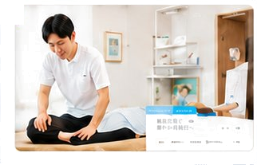
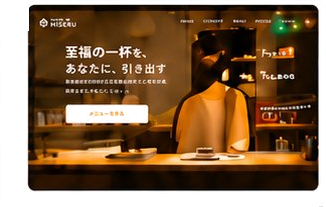
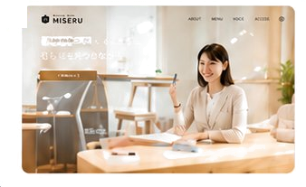
その他の制作実績も多数ございます。詳しくはお問い合わせください。
現状やお悩みをヒアリングします。
お店の魅力や目的を丁寧に伺います。
構成案とデザインをご提案します。
確認を重ねながら制作します。
公開後も必要に応じて支援します。
2万円〜
まずはWebサイトを持ちたい方に。必要な機能をシンプルに。
3万円〜
しっかり伝わるWebサイトを実現。バランスの良い人気プラン。
5万円〜
デザイン・機能・サポートを手厚くした充実プラン。
ご相談内容やご予算に応じて、柔軟にご提案します。お気軽にご相談ください。
内容によりますが、ライトな構成であれば最短2週間程度を目安に進行します。
可能です。徳島県内の場合は、必要に応じて対面での相談も調整します。
更新しやすい構成で制作し、必要に応じて更新方法もご案内します。
ドメイン・サーバー費用など、外部サービスに必要な費用は別途発生する場合があります。
はい。スマートフォンでも見やすく操作しやすいレスポンシブデザインで制作します。
はい。徳島県内の飲食店、美容室、整体院、個人事業主、小規模事業者のWebサイト制作やホームページ作成代行を想定しています。
相談できます。お店の強みや伝えたい内容をヒアリングし、必要な写真・文章・ページ構成を一緒に整理します。
はい。Instagram、公式LINE、Googleマップ、チラシなどからWebサイトへつながる導線を想定して制作します。
はい。徳島でWebサイト制作会社やホームページ作成代行を探している店舗・個人事業主向けに、制作内容や予算を分かりやすく整理してご提案します。
はい。必要なページ構成、文章、写真、公開までの流れを一緒に整理するため、初めての方でも簡単に相談を始められます。
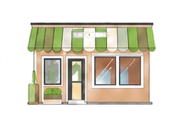
ホームページ制作・Webサイト作成代行のご相談を受け付けています。
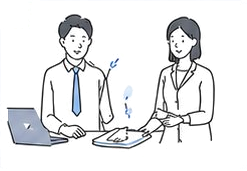